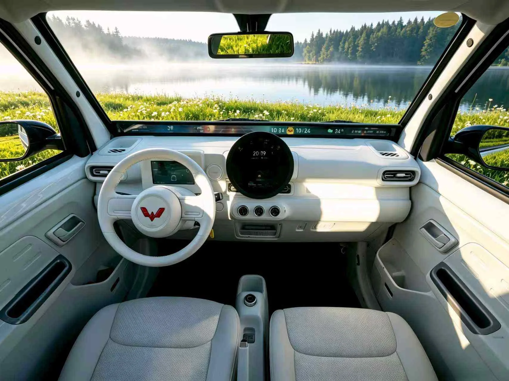
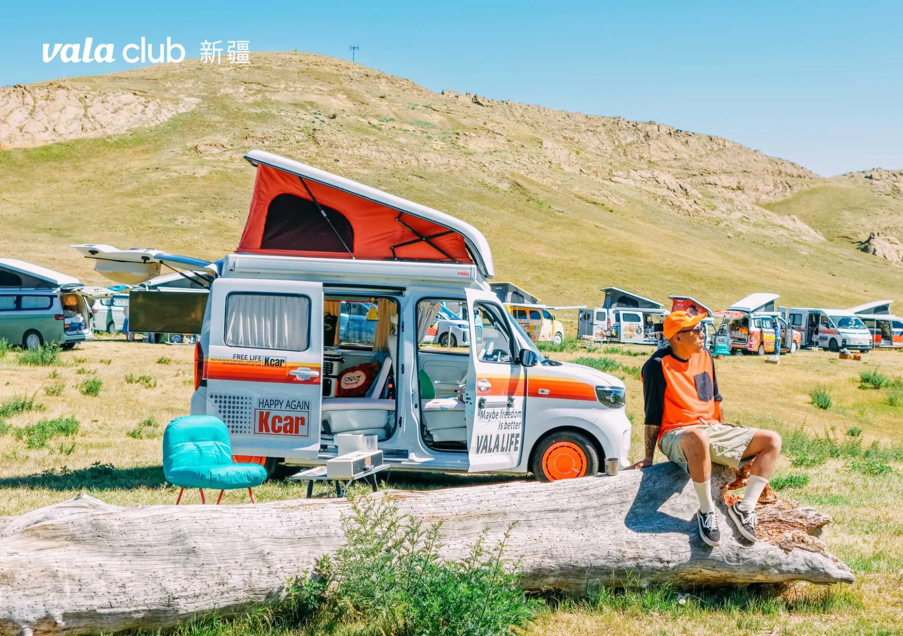
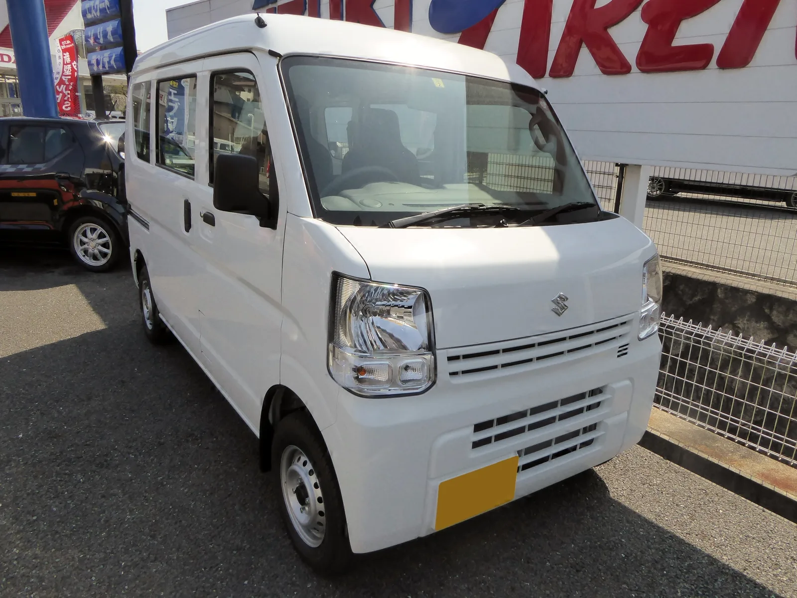

▲ 중국 캠핑카 스타트업 발라(Vala)가 우링(Wuling)과 협업해 만든 초소형 전기 캠퍼밴 '발라 카(Vala Kcar)'. 우링 로고가 새겨진 차체에 발라의 팝업 루프탑이 얹혀 있다 ⓒ Vala(vala.life)
주차장 한 칸 크기의 초소형 전기차가 캠핑카로 변신했습니다. 그런데 이 작은 차체 안에서 무려 4명이 잘 수 있다고 합니다.
중국 캠핑카 스타트업 발라(Vala)가 우링(정확히는 상하이GM우링·SAIC-GM-Wuling)과 손잡고 만든 '발라 카(Vala Kcar)'는, 쉐보레 볼트보다 짧고 좁습니다. 우링의 초소형 전기차 '우링 선샤인(Wuling Sunshine) EV'를 기반으로 개조했으며, 좁은 도심 골목과 협소한 주차 공간까지 파고들 수 있는 크기이면서도 팝업 루프탑 텐트와 접이식 좌석을 활용해 취침 공간을 확보했다는 점이 화제입니다.
1. 쉐보레 볼트보다 작다는 것의 의미
| 항목 | 초소형 EV 캠퍼밴 | 쉐보레 볼트 EV(참고) |
|---|---|---|
| 전장 | 3.6m (141.7in / 3,685mm) | 약 4.17m (164.0in) |
| 전폭 | 1.5m (59in / 1,530mm) | 약 1.77m (69.5in) |
| 전고 | 1.9m (74.8in / 1,980mm) | 약 1.59m (62.8in) |
길이와 너비는 볼트보다 확연히 작지만, 높이는 오히려 30cm가량 더 큽니다. 이 '작지만 높은' 비례가 이번 캠퍼밴의 핵심 설계 포인트입니다. 좁은 바닥 면적 대신 수직 공간을 활용해 실내 활용도를 끌어올린 것입니다. 발라 측은 루프탑 텐트를 접었을 때 높이가 1.98m로, 일반 지하주차장에도 들어갈 수 있는 크기라고 강조합니다.

▲ 발라 카의 실내. 스티어링 휠에 새겨진 우링(Wuling) 로고에서 기반 차량이 우링 선샤인 EV라는 점을 확인할 수 있다
2. 4명이 자는 방법 — 팝업 텐트와 접이식 시트
이 작은 차체 안에서 4명이 잘 수 있는 비결은 공간을 위아래로 나눠 쓰는 데 있습니다.
- 1층: 뒷좌석을 접어 평평하게 펼치면 성인 2명이 누울 수 있는 침대 공간 확보
- 2층: 지붕에 달린 팝업 루프탑 텐트를 펼치면 그 안에서 2명이 취침 가능
차량 뒤쪽에는 실내외 겸용으로 회전시켜 쓸 수 있는 TV가 내장돼 있어, 캠핑장에서 야외 스크린처럼 활용할 수도 있습니다. 4명이 "넉넉하게" 잔다기보다는, 캠핑이라는 상황을 감안하면 "그럭저럭 잘 수 있는" 수준이라는 게 정확한 표현에 가깝습니다.
3. 가격 — 왜 이렇게 저렴한가
| 트림 | 가격(중국 위안) | 원화 환산(약) |
|---|---|---|
| 스탠다드 | 9만 9,800위안 | 약 1,900만 원 |
| 풀옵션 | 13만 9,600위안 | 약 2,600만 원 |
이 가격이 가능한 이유는 명확합니다. 애초에 저렴한 초소형 전기차인 우링 선샤인 EV를 기반으로 삼았기 때문입니다. 완성차 브랜드가 처음부터 캠핑카 전용 플랫폼을 새로 만드는 것과 달리, 이미 양산 중인 초소형 EV 플랫폼에 발라의 팝업 루프탑·내장 패키지를 얹는 방식이라 원가 부담이 훨씬 적습니다. InsideEVs는 이를 "기본 차량 약 8,000달러 + 캠퍼 개조 약 7,000달러, 총합 1만 5천 달러 미만"으로 소개했는데, 이는 발라 카 스탠다드 트림의 중국 현지가(약 1,900만 원)와 대체로 맞아떨어지는 수준입니다. 다만 이 가격과 사양은 중국 내수 시장 기준으로, 국내 정식 수입 여부나 국내 안전기준 충족 여부는 별도로 확인되지 않았습니다.
발라 카의 상세 제원과 옵션 구성은 발라 공식 홈페이지에서 확인 가능합니다.
4. 초소형 EV 캠퍼, 왜 지금 늘어나나
중국을 중심으로 초소형 전기차를 캠핑카로 개조하는 사례가 최근 눈에 띄게 늘고 있습니다. 우링 계열 초소형 EV가 저렴한 가격에 대량 보급되면서, 이를 기반으로 한 캠핑카 개조 시장도 함께 커진 결과로 풀이됩니다. 발라는 신장위구르 등지에서 '발라 클럽(Vala Club)'이라는 이름의 오너 캠핑 모임을 열 정도로, 차량 판매를 넘어선 캠핑 커뮤니티 문화를 함께 키우고 있습니다.
일본에서도 경차(케이카) 기반의 소형 캠퍼밴이 하나의 장르로 자리잡은 지 오래입니다. 스즈키 에브리 등 소형 상용차를 기반으로 팝업 루프를 얹은 캠퍼 개조가 활발한데, 이번 발라 카도 같은 흐름의 전기차 버전으로 볼 수 있습니다.

▲ 팝업 루프탑 텐트를 펼친 발라 카. 실제 오너들이 참여한 '발라 클럽' 캠핑 모임에서 촬영된 모습이다

▲ 일본의 경차 기반 소형 밴(스즈키 에브리). 이런 소형 상용차를 캠퍼로 개조하는 문화는 이미 하나의 장르로 자리잡았다(참고용 이미지)
5. 정리
우링 선샤인 EV를 기반으로 발라(Vala)가 만든 '발라 카(Vala Kcar)'는 전장 3.6m, 전폭 1.5m로 쉐보레 볼트보다 작으면서도, 팝업 루프탑 텐트와 접이식 시트를 조합해 4명이 잘 수 있는 구조를 구현했습니다.
중국 현지 가격은 스탠다드 트림 기준 9만 9,800위안(약 1,900만 원)으로, 기존 캠핑카나 캠퍼밴 개조 비용과 비교하면 크게 저렴한 수준입니다. 다만 이는 중국 내수 기준이며, 국내 정식 출시나 인증 여부는 아직 확인되지 않았습니다. 초소형 EV를 활용한 캠핑카 개조는 중국과 일본을 중심으로 계속 늘어나는 추세로, 도심 주차 문제와 캠핑 수요를 동시에 해결하려는 실용적 접근으로 평가됩니다.